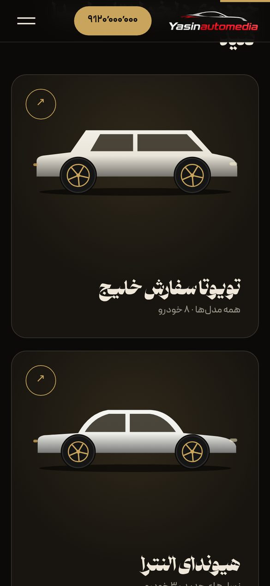

01 · 1405
یاسین دبی
سایت معرفی خودروهای نمایشگاه Yasin automedia که خودرو را مستقیم از دبی سفارش میدهد. مشتری خودرو را میبیند، مشخصاتش را میخواند و از همان صفحه تماس میگیرد.
- اسلایدر اصلی با عکس خودروها و افکتهای کلاسیک
- فروشگاه با دستهبندی تویوتا سفارش خلیج، النترا و لوکس کارکرده
- پنل مدیریت جدا که همهچیز سایت را ویرایش میکند
- افزودن خودرو از ربات تلگرام، روی هاست سیپنل داخل ایران
PHPJSONپنل مدیریتربات تلگرامواکنشگرا


